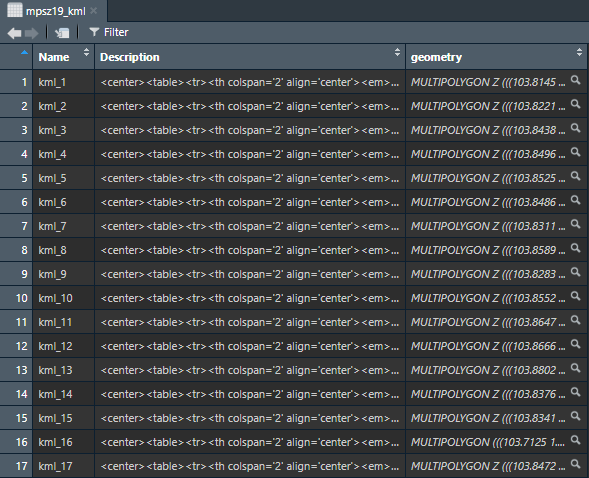
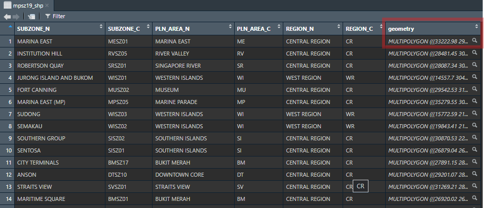

pacman::p_load(sf, tidyverse, tmap, ggstatsplot)In-class Exercise 1
1 Geospatial Data Wrangling with R
1.1 Getting Started
THe following 4 R packages will be used for this in-class exercise:
- sf for importing, managing, and processing geospatial data,
- tidyverse for performing data science tasks such as importing, wrangling and visualising data,
- tmap to plot functional and truthful choropleth maps, and
- ggstatsplot for creating graphics with details from statistical tests.
Tidyverse consists of a family of R packages. In this hands-on exercise, the following packages will be used:
- readr for importing csv data,
- readxl for importing Excel worksheet,
- tidyr for manipulating data,
- dplyr for transforming data, and
- ggplot2 for visualising data
Note
Thie code chunk below uses p_load() of pacman package to check if sf and tidyverse packages are installed in the computer. If they are, then they will be launched into R.
1.2 The code
1.3 The Data
1.3.1 Master Plan 2014 Subzone Boundary Web
the st_read() function of sf package is used to import MP14_SUBZONE_WEB_PL shapefile into R as a polygon feature data frame.
mpsz14_shp = st_read(dsn = "data/",
layer = "MP14_SUBZONE_WEB_PL")Reading layer `MP14_SUBZONE_WEB_PL' from data source
`C:\zjho008\ISSS626-GAA\In-class_Ex\In-class_Ex01\data' using driver `ESRI Shapefile'
Simple feature collection with 323 features and 15 fields
Geometry type: MULTIPOLYGON
Dimension: XY
Bounding box: xmin: 2667.538 ymin: 15748.72 xmax: 56396.44 ymax: 50256.33
Projected CRS: SVY21Using the class() function, the code chunk below tells us that it is a simple feature data frame.
class(mpsz14_shp)[1] "sf" "data.frame"This code chunk imports the kml file
# mpsz14_kml <- st_read("data/MasterPlan2014SubzoneBoundaryWebKML.kml")
Warning
After running the code, an error message is shown stating that the file cannot be opened. This is likely due to an issue with file structure resulting in file being unable to be opened.
1.4 Working with Master Plan 2014 Subzone Boundary Web file - Attempt
st_write()
st_write(mpsz14_shp,
"data/MP14_SUBZONE_WEB_PL.kml",
delete_dsn = TRUE)Deleting source `data/MP14_SUBZONE_WEB_PL.kml' using driver `KML'
Writing layer `MP14_SUBZONE_WEB_PL' to data source
`data/MP14_SUBZONE_WEB_PL.kml' using driver `KML'
Writing 323 features with 15 fields and geometry type Multi Polygon.
Note
With the code chunk above the file in kml format is created. The delete_dsn argument is to overwrite the old file and replace with the new file with same file name.
1.5 Working with Master Plan 2019 Subzone Boundary Data
mpsz19_kml <- st_read("data/MasterPlan2019SubzoneBoundaryNoSeaKML.kml")Reading layer `URA_MP19_SUBZONE_NO_SEA_PL' from data source
`C:\zjho008\ISSS626-GAA\In-class_Ex\In-class_Ex01\data\MasterPlan2019SubzoneBoundaryNoSeaKML.kml'
using driver `KML'
Simple feature collection with 332 features and 2 fields
Geometry type: MULTIPOLYGON
Dimension: XY, XYZ
Bounding box: xmin: 103.6057 ymin: 1.158699 xmax: 104.0885 ymax: 1.470775
z_range: zmin: 0 zmax: 0
Geodetic CRS: WGS 84
Upon some initial observation - kml version is not very tidy
1.6 Handling Coordinate Systems
1.6.1 Transforming coordinate system
For this section an updated version of the data published in 2019 will be used.
mpsz19_shp = st_read(dsn = "data/",
layer = "MPSZ-2019") %>%
st_transform(crs = 3414)Reading layer `MPSZ-2019' from data source
`C:\zjho008\ISSS626-GAA\In-class_Ex\In-class_Ex01\data' using driver `ESRI Shapefile'
Simple feature collection with 332 features and 6 fields
Geometry type: MULTIPOLYGON
Dimension: XY
Bounding box: xmin: 103.6057 ymin: 1.158699 xmax: 104.0885 ymax: 1.470775
Geodetic CRS: WGS 841.6.2 Rationale
The Master Plan 2019 Subzone Boundary Data was in the Geographical Coordinate System - WGS84.
A viable option to check the geometry if its is in: 0 - 180 / 0 - 360 likely in WGS coordinate system.
For the code chunk above, pipe is utilised since we are using sf.
After transformation (re-projection) observed from geometry that now it is in metres

1.7 In-class sharing
Comparing excel(due to heading & blank spaces & asteris) vs csv file (better for analysis). CSV seems to be the more viable option for analysis as it has no un-necessary structure.
1.8 Working with population data
The Task: To visit and extract the latest Singapore Residents by Planning Area / Subzone, Age, Group, Sex and Type of Dwelling from Singstat.
popdata <- read_csv("data/respopagesextod2023.csv")Rows: 100928 Columns: 7
── Column specification ────────────────────────────────────────────────────────
Delimiter: ","
chr (5): PA, SZ, AG, Sex, TOD
dbl (2): Pop, Time
ℹ Use `spec()` to retrieve the full column specification for this data.
ℹ Specify the column types or set `show_col_types = FALSE` to quiet this message.Wrangling of data to be done in order to derive the groups: YOUNG, ACTIVE, ECONOMY ACTIVE
popdata2023 <- popdata %>%
group_by(PA, SZ, AG) %>%
summarise(`POP` = sum(`Pop`)) %>%
ungroup() %>%
pivot_wider(names_from = AG,
values_from = POP)`summarise()` has grouped output by 'PA', 'SZ'. You can override using the
`.groups` argument.Code was split to observe the steps - one at a time. Will aggregate does not differentiate male/female.
pivot wider portion - will compute and bring multiple columns based on age.
colnames(popdata2023) [1] "PA" "SZ" "0_to_4" "10_to_14" "15_to_19"
[6] "20_to_24" "25_to_29" "30_to_34" "35_to_39" "40_to_44"
[11] "45_to_49" "50_to_54" "55_to_59" "5_to_9" "60_to_64"
[16] "65_to_69" "70_to_74" "75_to_79" "80_to_84" "85_to_89"
[21] "90_and_Over"1.9 Data Processing
popdata2023 <- popdata2023 %>%
mutate(YOUNG = rowSums(.[, 3:6]) + rowSums(.[, 14])) %>% # Aged 0-24, 10-24 + Aged 5-9
mutate(`ECONOMY ACTIVE` = rowSums(.[, 7:13]) + rowSums(.[, 15])) %>% # Aged 25-59 + Aged 60-64
mutate(AGED = rowSums(.[, 16:21])) %>% # Aged 65 and above
mutate(TOTAL = rowSums(.[, 3:21])) %>% # Total population
mutate(DEPENDENCY = (YOUNG + AGED) / `ECONOMY ACTIVE`) %>% # Dependency ratio
select(PA, SZ, YOUNG, `ECONOMY ACTIVE`, AGED, TOTAL, DEPENDENCY)+rowSums should not be 12 (as attempted in Hands-On Exercise) but its 14.
We use glimpse() function take a look at the updated popdata2023 data-frame.
glimpse(popdata2023)Rows: 332
Columns: 7
$ PA <chr> "Ang Mo Kio", "Ang Mo Kio", "Ang Mo Kio", "Ang Mo Kio…
$ SZ <chr> "Ang Mo Kio Town Centre", "Cheng San", "Chong Boon", …
$ YOUNG <dbl> 1240, 5150, 4620, 4320, 1840, 3810, 1870, 3750, 0, 10…
$ `ECONOMY ACTIVE` <dbl> 2830, 15600, 14120, 12400, 3670, 9600, 4320, 11090, 0…
$ AGED <dbl> 890, 6580, 7060, 5640, 1420, 4320, 1790, 5390, 0, 880…
$ TOTAL <dbl> 4960, 27330, 25800, 22360, 6930, 17730, 7980, 20230, …
$ DEPENDENCY <dbl> 0.7526502, 0.7519231, 0.8271955, 0.8032258, 0.8882834…